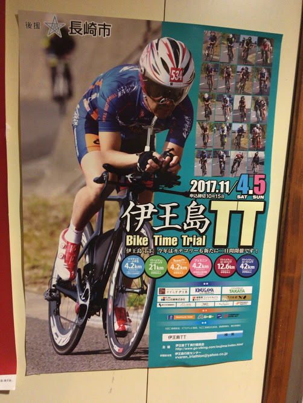
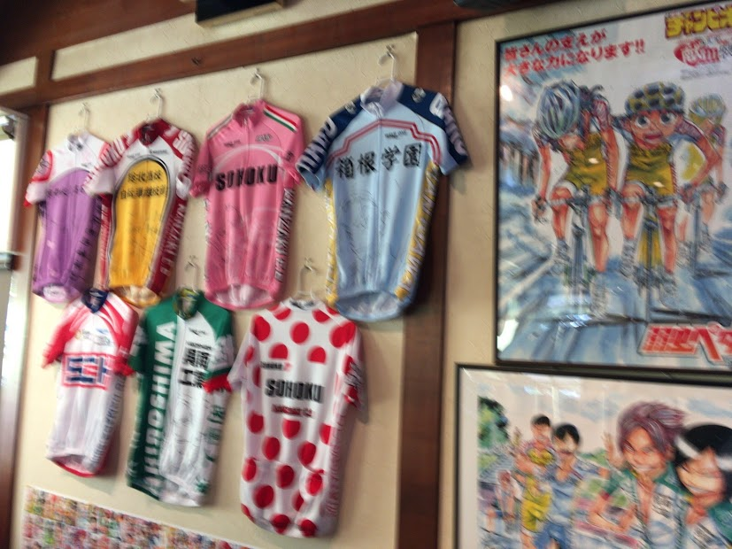
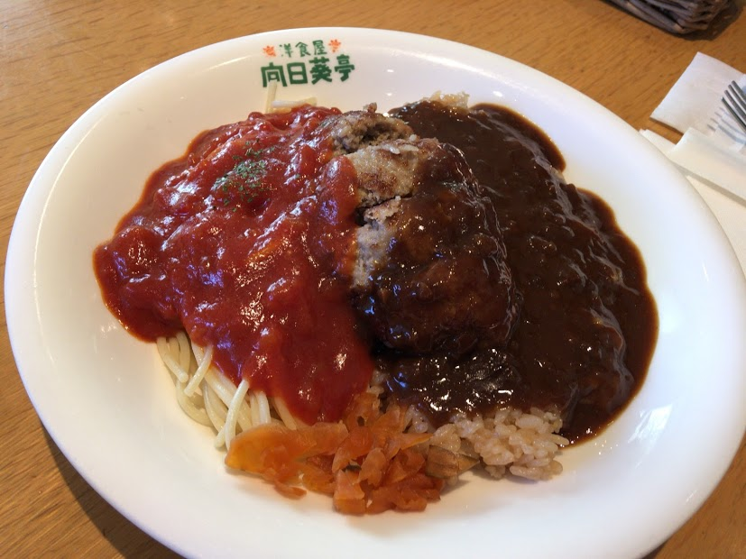
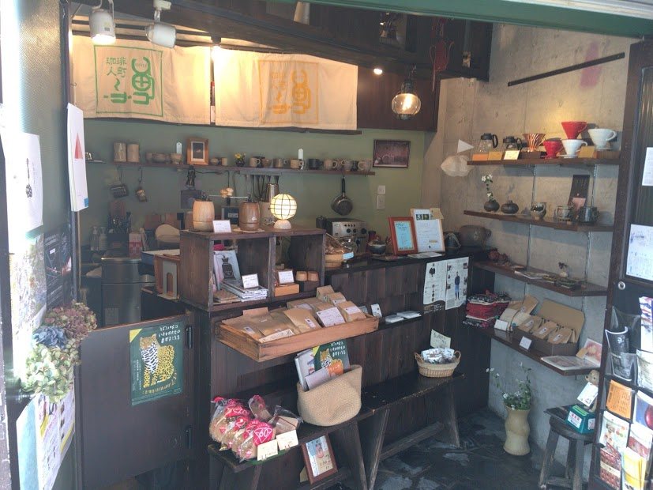
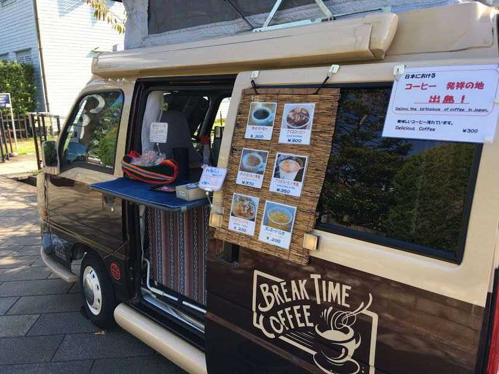

2017.11.13
今年三度目の長崎は、とても天気が良くゆっくり過ごすことができました。
不思議なもので、最近ロードバイクが気になっていたら、長崎伊王島でロードバイクのイベントに出会いました。


長崎の食べ物と言えば、「ちゃんぽん」「皿うどん」を思い浮かべる人が多いのではないかなと思いますが、「トルコライス」が地元に根付いているなと感じました。
トルコライスはどちらかというとこってりした感じで、若い方向きのように思いますが、私たちの行った向日葵亭では意外と年配の方が多くソウルフードとしてのトルコライスを感じできました。

今回訪問したコーヒー店を少し紹介します。
長崎ししとき川 珈琲人町へ立ち寄りました。

姉妹店の「笠」はネルドリップで淹れているとのことなので、今度訪問してみようと思います。
おまけに、新しくなった出島にあった出張タイプの珈琲店でも、「コーヒー発祥の地」の言葉に引かれて珈琲飲んできました。
